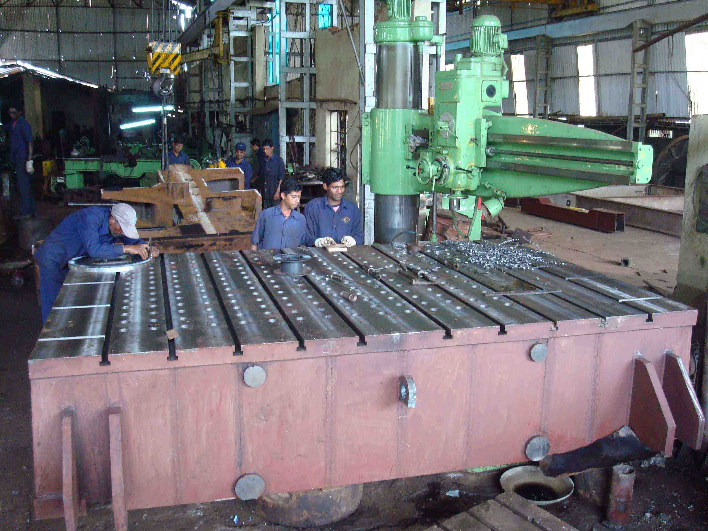

MACHINING FACILITIES
TMP ENGINEERING WORKS PVT. LIMITED.
has a
Large-scale Machining facility providing machining requirements to heavy fabricated jobs and huge
castings jobs. It is specially designed to handle large components and boast equipment that is some of
the largest of its kind. Three large scale horizontal boring mills of various sizes are available, and
as well as
large lathe machines. The high accuracy jobs undertaken are achieved through the high precision
machineries and the experienced operators available. The machine shop has 100 sq. Mtr. covered area,
with a good environment, 100% stand by power and handling facility of upto 30 MT EOT Crane.
We feature a diverse range of machining capabilities that specialize in large-scale and Heavy
applications.
Well Equipped Latest Equipments and Qualified Engineers are to offer
• Quality.
• Economy Delivery.
MACHINERY DETAILS
| Horizontal Boring Machine X-Axis - 5000mm Y-Axis - 2000mm Z-Axis - 1250mm Spindle Diameter – 225 mm & 125 mm telescopic Make:- Scharmann – Germany With DRO |
|
|
Horizontal Boring Machine X-Axis - 5000mm Y-Axis - 3000mm Z-Axis - 1250mm Spindle Diameter – 152 mm Make:- Stanko, Russia. With DRO |
|
|
Horizontal Boring Machine
X-Axis - 5000mm Y-Axis - 3000mm Z-Axis - 1250mm Spindle Diameter – 152 mm Make:- Giddings & Lewis - American With DRO |
|
 |
Horizontal Boring Machine
X-Axis - 1500mm Y-Axis - 1500mm Z-Axis - 1000mm Spindle Diameter – 125 mm Make:- WMW Union – Germany With DRO |
|
Center Lathe Machine Swing over Bed - 1500 mm Swing over Carriage – 1200 mm ABC( Between Centre) – 8000 mm Make – Sahaj. Rajkot Job Machined till now 20 MT |
|
|
Center Lathe Machine Swing over Bed - 1000 mm Swing over Carriage – 800 mm ABC( Between Centre) – 6000 mm Make - Union Indian Job Machined till now 12 MT |
 |
|
Center Lathe Machine Swing over Bed - 600 mm Swing over Carriage – 400 mm ABC( Between Centre) – 5500 mm Make – John Bertram , Canada |
|
|
Planomiller Stroke length - 4200mm Distance between columns - 1800mm Max. ht. of job - 1000mm |
 |
|
Radial drilling Max Drill dia – 80mm Make:- HMT |
|
Universal Radial drilling Max Drill dia – 40mm Make - |
|
|
Center lathe Swing over carriage – 600mm Length between centers-2000mm |
 |
|  |
Center lathe Swing Dia – 350mm Length between centers-3000mm |
FABRICATION FACILITIES
We are providing our services and have manufactured various equipments and machinery for many OEM's and
end users of Cement, Steel, Material handling, Paper, Dams, Barrages & general heavy engineering
companies. We are also manufacturing the jobs / equipments as per customer's design and quality norms.
The equipments are manufactured as per the standards for material selection, Material Testing, Certified
Welding - Fabrication Procedures, Heat Treatments, Machining and Testing. The fabrication shop has 100
sq. mtr. covered area with concrete flooring, 300 sq, mtr of storage area with a good environment, 100%
standby power, handling facility of 20 ton EOT Crane with Heavy duty plate bending machine and a
hydraulic press of 350 MT capacity is available.
Radiography facilities with source and including developing and viewing films. Dye Penetrant test can be
conducted. Besides this, hydraulic motorized and hand operated testing pump is available, Ultrasonic
flaw detector, Magnetic Particle Testing and Hardness tester are also available with the
source.
Well Equipped Latest Equipment and Qualified Engineers are to offer
• Quality.
• Economy Delivery.
MACHINERY DETAILS
• EOT Crane 20 MT
• Bending
• Hydraulic Jack & Power Pack 50 Tonne capacity
• Cutting
• Welding
• Arc Welding Machine
| • Hydraulic Press 350 Tonne capacity | |
| • Hydraulic Press 125 Ton Capacity | |
|
• Plate Bending Machine Metres width x16 mm thick |
|
|
• Plate Bending Machine 2.5 metres width x 25 mm thick |
|
| • Plasma Cutting machine 25 mm capacity | |
| • Plate cutting machines |